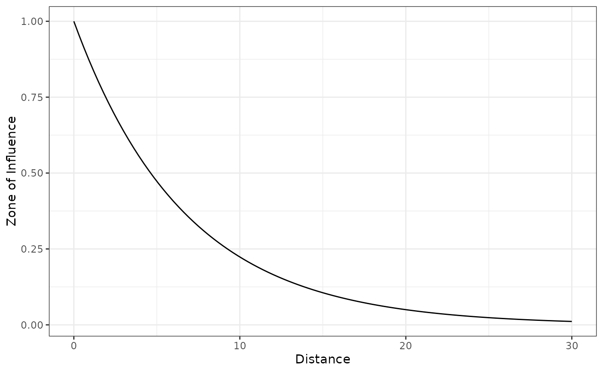
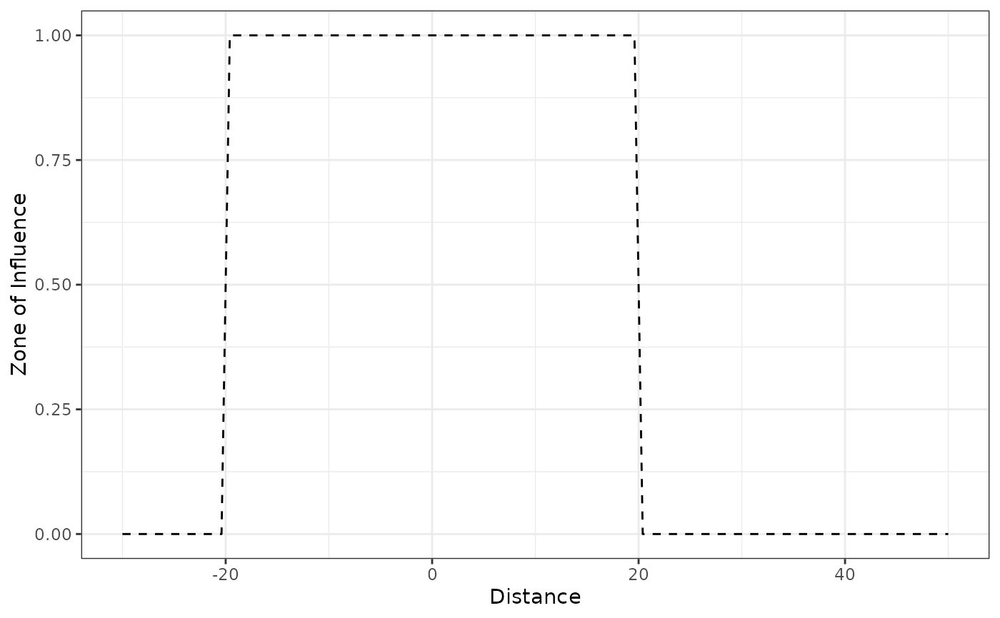
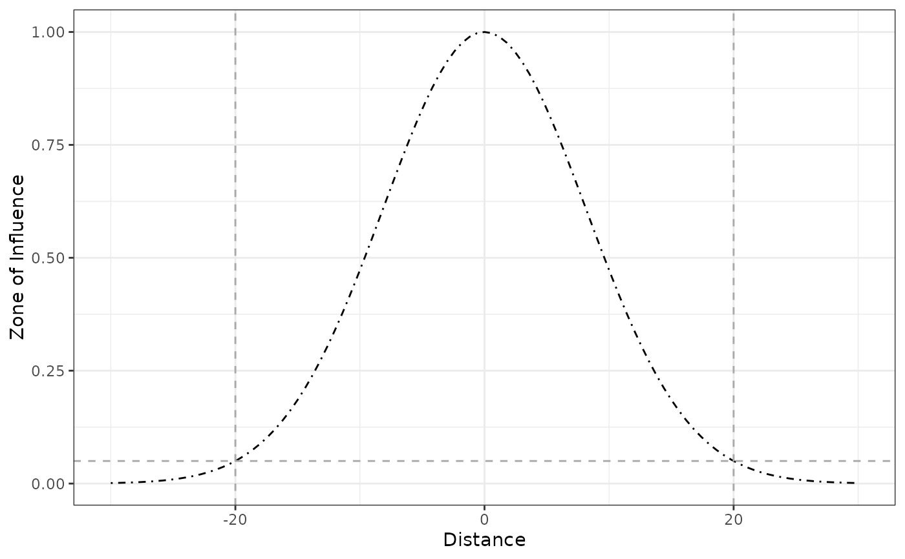
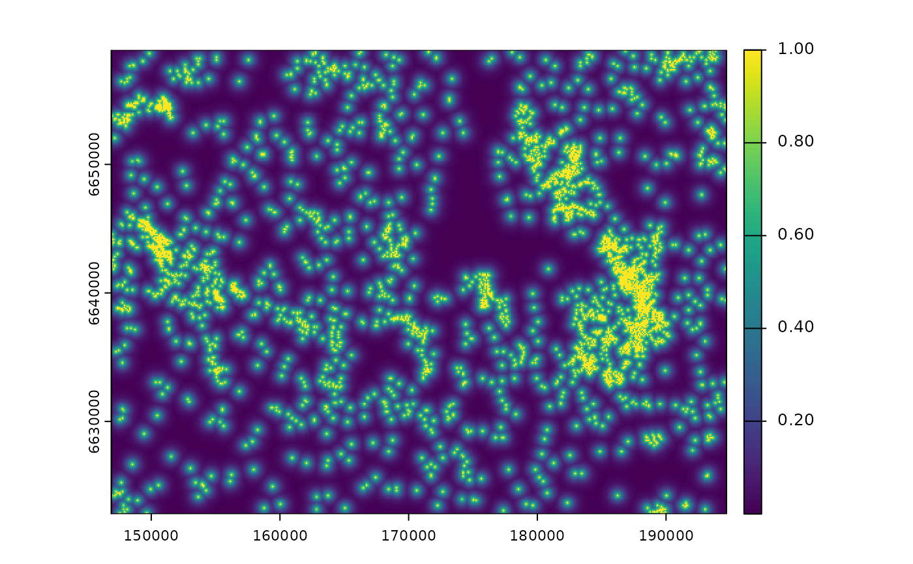
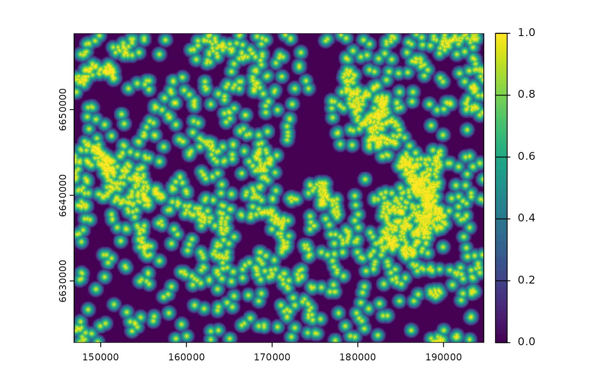

Computes the decay functions that represent the Zone of
Influence (ZOI). The functions' radius (parameter radius)
controls how far the zone of influence of an infrastructure or disturbance reaches,
and the functions' shape (parameter type) represent represent how the ZOI
decays in space. Given a function shape (type) is chosen, the rate
of decay of the different ZOI functions is parameterized based on
the ZOI radius – e.g the slope of linear_decay() is defined
so that the function decreases to zero at the ZOI radius.
These functions can be used to transform arrays of (Euclidean)
distance values (in one dimension) or rasters of (Euclidean) distance
(in two dimensions) into ZOI values. The distances might represent
the distance to human infrastructure, sources of disturbance, or
more broadly any type of land use class or spatial variable.
Usage
dist_decay(
x,
radius = NULL,
type = c("exp_decay", "gaussian_decay", "linear_decay", "threshold_decay")[1],
zoi_limit = 0.05,
origin = 0,
oneside = TRUE,
...
)
threshold_decay(x, radius, intercept = 1, origin = 0, oneside = TRUE)
# S3 method for class 'numeric'
threshold_decay(x, radius, intercept = 1, origin = 0, oneside = TRUE)
# S3 method for class 'SpatRaster'
threshold_decay(x, radius, intercept = 1, origin = 0, oneside = TRUE)
step_decay(x, radius, intercept = 1, origin = 0, oneside = TRUE)
bartlett_decay(x, radius, intercept = 1, origin = 0, oneside = TRUE)
# S3 method for class 'numeric'
bartlett_decay(x, radius, intercept = 1, origin = 0, oneside = TRUE)
# S3 method for class 'SpatRaster'
bartlett_decay(x, radius, intercept = 1, origin = 0, oneside = TRUE)
tent_decay(x, radius, intercept = 1, origin = 0, oneside = TRUE)
linear_decay(x, radius, intercept = 1, origin = 0, oneside = TRUE)
gaussian_decay(
x,
radius = NULL,
zoi_limit = 0.05,
intercept = 1,
lambda = NULL,
sigma = NULL,
origin = 0,
...
)
half_norm_decay(
x,
radius = NULL,
zoi_limit = 0.05,
intercept = 1,
lambda = NULL,
sigma = NULL,
origin = 0,
...
)
exp_decay(
x,
radius = NULL,
zoi_limit = 0.05,
intercept = 1,
lambda = NULL,
origin = 0,
oneside = TRUE,
half_life = NULL,
zoi_hl_ratio = NULL
)Arguments
- x
[numeric,SpatRaster,RasterLayer]
Euclidean distance from an infrastructure, source of disturbance, or feature/class of interest. It can be a single value, an array of values, or a raster object. It must not necessarily be an Euclidean distance, but preferably it should be a distance measured in meters, to ease interpretation (e.g. geodesic distance).- radius
[numeric(1)]
Radius of the zone of influence (ZOI), the distance at which the ZOI vanishes or goes below a given minimum limit valuezoi_limit. See details.- type
[character(1)="Gauss"]{"Gauss", "exp_decay", "bartlett", "linear", "tent", "threshold", "step"}
Type or shape of the decay distance.If
"Gauss"or"half_norm", the ZOI follows a half-normal shape:intercept * exp(-lambda * (euclidean_distance^2)).interceptandlambdaare parameters to be defined – see details.If
"exp_decay", the ZOI follows an exponential decay shape:intercept * exp(-lambda * euclidean_distance).interceptandlambdaare parameters to be defined – see details.If
"bartlett","linear_decay", or"tent_decay", the ZOI follows a linear decay shape within the ZOI radius (parameterradius).If
"threshold"or"step", a constant influence is consider within the zone of influence radius (parameterradius). All pixels closer thanradiusto infrastructure are considered as "under the influence" of the nearest feature, with a constant influence value defined by theinterceptparameter, and all values/pixels beyondradiusare assumed to have zero influence.
- zoi_limit
[numeric(1)=0.05]
For non-vanishing functions (e.g.exp_decay,gaussian_decay), this value is used to set the relationship between the ZOI radius and the decay functions:radiusis defined as the minimum distancexat which the ZOI assumes values belowzoi_limit. The default is 0.05. This parameter is used only ifradiusis notNULL.- origin
[numeric(1)=0]
In which position (in 1 dimension) is located the infrastructure or source of disturbance? Default is zero. For raster objects, this parameter should be ignored.- oneside
[logical(1)=TRUE]
IfFALSE, negative distance values are considered symmetrically and their transformation is always positive. This parameter is only meaningful ifxis a vector of values, not a raster object.- intercept
[numeric(1)=1]
Maximum value of the ZOI function at when the distance from disturbance sources is zero (x = 0). For thethreshold_decayandstep_decayfunctions,interceptis the constant value of the Zone of Influence within the ZOIradius. For the other ZOI functions,interceptis the value of the functions at the origin (where the sources of disturbance are located, i.e.x = 0). Default isintercept = 1.- lambda
[numeric(2)=NULL]
For thegaussian_decayandexp_decayfunctions,lambdais the decay parameter of the Gaussian or exponential decay function. Notice that the interpretation oflambdais different depending on the the function – see details for definitions. For the Gaussian decay function, the value forlambdais only considered if bothradius = NULLandsigma = NULL. For the exponential decay function, the value forlambdais only considered if bothradius = NULLandhalf_life = NULL.- sigma
[numeric(1)=NULL]
Standard deviation of the Gaussian decay function. It is related to the Gaussian decay rate \(\lambda\) aslambda = 1/(2*sigma^2). Only considered to compute the ZOI for thegaussian_decayfunction when the ZOI radius parameter is null (radius = NULL).- half_life
[numeric(1)=NULL]
Half life of the exponential decay function, in meters (or map units, for rasters). By definition, the half life is the distance where the exponential decay function reaches 0.5 of its maximum value. For theexp_decayfunction, if the ZOI radius parameter is null (radius = NULL), the value of the exponential half life (half_life = log(2)/lambda) can be used to parameterize the exponential decay function.- zoi_hl_ratio
[numeric(1)=NULL]
For theexp_decayfunction, if both the ZOI radiusradiusandzoi_hl_ratioare given andhalf_lifeisNULL, this value is used to set the ZOI radius (andzoi_limitis ignored).zoi_hl_ratiois the ratio between the ZOI radius value and the half life of the exponential function. For instance, ifradius = 1200andzoi_hl_ratio = 6, this meanshalf_lifeis 200. As a consequence, the exponential decay ZOI function decreases to 0.5 at distance 200, and the ZOI radius = 1200 is defined as the distance at which the ZOI decreases to 0.5**6 = 0.015625.
Value
The ZOI values for a given array of distance values if x is numeric,
or a raster object delimiting the ZOI if x corresponds to the distance from
infrastructure or disturbance sources in 2 dimensions space.
Details
A generic function dist_decay() can be used to compute
ZOI values according to functions with different shapes (parameter type)
and radii (parameter radius). Alternatively, there are specific functions
implemented for each ZOI shape.
For the threshold function (threshold_decay()) and the linear decay
function (linear_decay()), the ZOI radius (parameter radius) is the
distance x where the ZOI function value decreases to zero.
For the linear decay, this is done by setting
the slope of the linear function as -intercept/radius, where intercept
is the intercept of the linear function (here, the maximum value at x = 0).
For non-vanishing functions that approach zero asymptotically
(exp_decay(), gaussian_decay()), a certain limit value must be given to define
the ZOI radius – so that the ZOI radius is defined as the distance x where the
ZOI function goes below this limit value. For these functions,
different parameters are available
for setting the relationship between the ZOI function value and the ZOI radius.
Some functions have multiple possible names, for the sake of flexibility:
linear_decay(),bartlett_decay(), andtent_decay()are the same function;threshold_decay()andstep_decay()are the same function;gaussian_decay()andhalf_norm_decay()are the same function.
Alternatively, dist_decay() can call all of them, given a
ZOI shape is specified through the parameter type.
Other functions might be implemented in the future.
Definitions
Here are some formal definitions for the ZOI functions \(\phi(d_i, r)\), where \(d_i\) is the distance to the feature \(i\) of an infrastructure or source of disturbance and \(r\) is the radius of the zone of influence:
threshold_decay(): the threshold or step decay function \(\phi_{threshold}\) is positive and constant within the ZOI radius \(r\), and null for \(x \ge r\): $$ \phi_{threshold}(d_i, r_k) = c \text{ if } d_i < r, 0 \text{ otherwise} $$ where \(c\) is a constant value (by defaultc = 1).linear_decay(): the linear (or tent/Bartlett) decay function \(\phi_{linear}\) decreases linearly from a maximum value \(c\) (the intercept, by defaultc = 1) to zero when \(x \ge r\): $$\phi_{linear}(d_i, r) = c - c/r \text{ if } x < r, \text{ 0 otherwise}$$exp_decay(): the exponential decay function \(\phi_{exp}\) decreases exponentially from a maximum value \(c\) (by defaultc = 1) with a rate \(\lambda\), which is defined by \(r\) and a ZOI limit value \(\phi_{lim}\), a small ZOI value below which the influence is considered negligible: $$\phi_{exp}(d_i, r, \phi_{lim}) = c exp(-\lambda d_i)$$ with $$\lambda = ln(1/\phi_{lim}) / r$$ In this context, the ZOI radius \(r\) is the distance beyond which \(\phi_{exp} < \phi_{lim}\).gaussian_decay(): the Gaussian decay function \(\phi_{Gauss}\) follows a Gaussian (half-normal) decay with maximum \(c\) (by defaultc = 1) and a decay rate \(\lambda\) defined by \(r\) and a ZOI limit value \(\phi_{lim}\), a small ZOI value below which the influence is considered negligible: $$\phi_{Gauss}(d_i, r, \phi_{lim}) = c exp(-\lambda d_i^2)$$ with $$\lambda = ln(1/\phi_{lim}) / (r^2)$$ In this context, the ZOI radius \(r\) is the distance beyond which \(\phi_{exp} < \phi_{lim}\). Note that \(\lambda\) is defined differently for thegaussian_decayand theexp_decayfunctions.
Parameterization
Some of the shapes of the ZOI (parameter type in dist_decay()) might be
parameterized in multiple ways. Here is a brief description of each possibility:
For the
"Gauss"or"half_norm"shapes, the ZOI follows a half-normal shape:intercept * exp(-lambda * (euclidean_distance^2)).interceptandlambdaare parameters to be defined. There are three ways of specifyinglambda:If the
radius = NULL(default),lambdais a parameter by itself to be specified by the user. In all other cases (below) the value of this parameter is ignored, even if provided.If the parameter
radiusis provided, the rate of decay is given bylambda = log(1/zoi_limit) / (radius**2). In other words,lambdais defined so that the function decreases tozoi_limitwhenx = radius.If the
radius = NULLandsigmais provided,lambdais defined aslambda = 1/(2*sigma**2).
For the
"exp_decay"shape, the ZOI follows an exponential decay shape:intercept * exp(-lambda * euclidean_distance).interceptandlambdaare parameters to be defined. There are four ways of specifyinglambda:If the
radius = NULL(default),lambdais a parameter by itself to be specified by the user. In all other cases (below) the value of this parameter is ignored, even if provided.If the parameter
radiusis provided, the rate of decay is given bylambda = log(1/zoi_limit) / radius. In other words,lambdais defined so that the function decreases tozoi_limitwhenx = radius.If the
radius = NULLandhalf_lifeis given,lambdais defined based on the half life of the exponential function – the distance at which the function decreases to 1/2. Ifzoi_hl_ratio = NULL,lambdais defined aslambda = log(2)/half_life.The last possibility is to specify
zoi_hl_ratio, the ratio between the ZOI radius and the half life of the exponential function. For instance, ifzoi_hl_ratio = 4, this means the ZOI radius is defined as4*half_life. Ifzoi_hl_ratiois provided, the exponentialhalf_lifeis defined based on this parameter andlambdais defined accordingly, based on the relationship above. In this case,radiusis ignored, even if specified.
For the
"bartlett","linear_decay", or"tent_decay"shapes, the ZOI follows a linear decay shape (y = a*x + b) within the ZOI radius (parameterradius). The intercept of the linear function (b) is given by the parameterinterceptand the slope (a) is given by-intercept/radius.For the
"threshold"or"step"shapes, a constant influence is consider within the zone of influence radius (parameterradius). All pixels closer thanradiusto infrastructure are considered as "under the influence" of the nearest feature, with a constant influence value defined by theinterceptparameter, and all values/pixels beyondradiusare assumed to have zero influence.
Examples
# generic dist_decay function
oneimpact::dist_decay(500, radius = 1000, type = "exp_decay")
#> [1] 0.2236068
oneimpact::dist_decay(500, radius = 1000, type = "gaussian_decay")
#> [1] 0.4728708
oneimpact::dist_decay(500, radius = 1000, type = "linear_decay")
#> [1] 0.5
oneimpact::dist_decay(500, radius = 1000, type = "step_decay")
#> [1] 1
# test the zone of influence functions
# here we use ggplot() to illustrate the functions, to make the figures more
# widely reproducible
# to ease the plots, use the function plot_zoi1d()
library(ggplot2)
# exponential decay
exp_decay(10, radius = 30)
#> [1] 0.3684031
f1 <- ggplot(data.frame(x = c(0, 30)), aes(x = x)) +
stat_function(fun = exp_decay, args = list(radius = 20)) +
labs(x = "Distance", y = "Zone of Influence") +
theme_bw()
f1

# exponential decay - two sides
f1_2 <- ggplot(data.frame(x = c(-30, 30)), aes(x = x)) +
stat_function(fun = exp_decay,
args = list(radius = 20, oneside = FALSE)) +
labs(x = "Distance", y = "Zone of Influence") +
theme_bw()
f1_2
# threshold
threshold_decay(5, radius = 10)
#> [1] 1
threshold_decay(10, radius = 10)
#> [1] 0
f2 <- ggplot(data.frame(x = c(0, 30)), aes(x = x)) +
stat_function(fun = threshold_decay,
args = list(radius = 20), linetype = 2) +
labs(x = "Distance", y = "Zone of Influence") +
theme_bw()
f2
# threshold - two sides
f2_2 <- ggplot(data.frame(x = c(-30, 50)), aes(x = x)) +
stat_function(fun = threshold_decay,
args = list(radius = 20, oneside = FALSE), linetype = 2) +
labs(x = "Distance", y = "Zone of Influence") +
theme_bw()
f2_2

# linear, tent, or bartlett decay
bartlett_decay(5, radius = 10)
#> [1] 0.5
bartlett_decay(8, radius = 10)
#> [1] 0.2
f3 <- ggplot(data.frame(x = c(0, 30)), aes(x = x)) +
stat_function(fun = bartlett_decay, args = list(radius = 20), linetype = 3) +
labs(x = "Distance", y = "Zone of Influence") +
theme_bw()
f3
# linear, two sides
f3_3 <- ggplot(data.frame(x = c(-30, 40)), aes(x = x)) +
stat_function(fun = bartlett_decay,
args = list(radius = 20, origin = 10, oneside = FALSE), linetype = 3) +
labs(x = "Distance", y = "Zone of Influence") +
theme_bw()
f3_3
# guassian or half normal
gaussian_decay(5, sigma = 6)
#> [1] 0.7066483
f4 <- ggplot(data.frame(x = c(0, 30)), aes(x = x)) +
stat_function(fun = gaussian_decay,
args = list(radius = 20, zoi_limit = 0.05), linetype = 4) +
labs(x = "Distance", y = "Zone of Influence") +
geom_vline(xintercept = 20, linetype = 2, color = "darkgrey") +
geom_hline(yintercept = 0.05, linetype = 2, color = "darkgrey") +
theme_bw()
f4
# half normal - two sides
gaussian_decay(5, sigma = 6)
#> [1] 0.7066483
f4_2 <- ggplot(data.frame(x = c(-30, 30)), aes(x = x)) +
stat_function(fun = gaussian_decay,
args = list(radius = 20, zoi_limit = 0.05), linetype = 4) +
labs(x = "Distance", y = "Zone of Influence") +
geom_vline(xintercept = c(-20, 20), linetype = 2, color = "darkgrey") +
geom_hline(yintercept = 0.05, linetype = 2, color = "darkgrey") +
theme_bw()
f4_2

# plot several ZoI with the same radius
f1 +
stat_function(fun = threshold_decay, args = list(radius = 20), linetype = 2) +
stat_function(fun = bartlett_decay, args = list(radius = 20), linetype = 3) +
stat_function(fun = gaussian_decay, args = list(radius = 20, zoi_limit = 0.05), linetype = 4) +
labs(x = "Distance", y = "Zone of Influence") +
theme_bw()
#---
# applying dist_decay functions for rasters
library(terra)
# calculate Euclidean distance
f <- system.file("raster/sample_area_cabins.tif", package = "oneimpact")
cabins <- terra::rast(f)
cabins_dist <- calc_zoi_nearest(cabins, type = "euclidean")
# transform Euclidean in distance decay
# exponential decay
plot(oneimpact::dist_decay(cabins_dist, radius = 1000, type = "exp_decay"))

# linear decay
plot(oneimpact::dist_decay(cabins_dist, radius = 1000, type = "tent_decay"))
